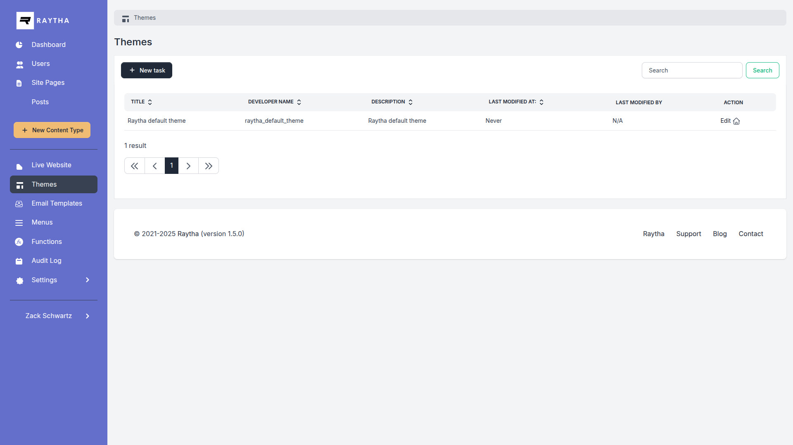
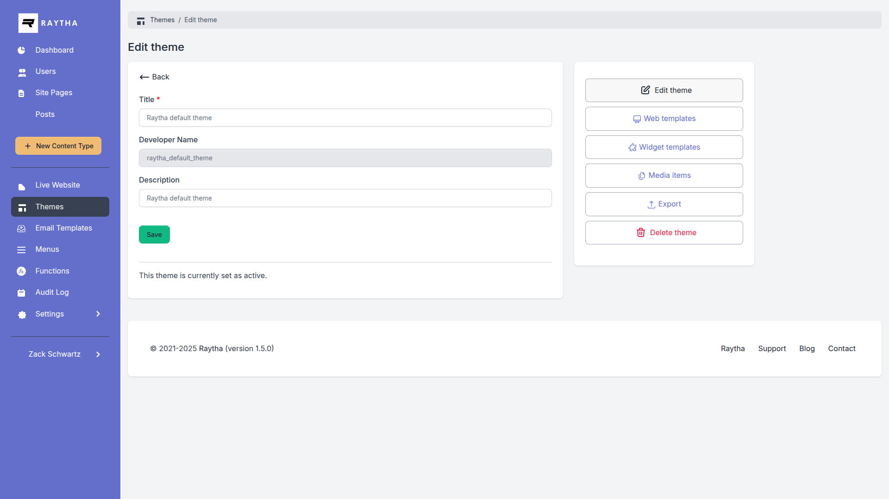

Themes
Themes contain all the visual elements of your website: templates, styles, and media assets. Manage multiple themes and switch between them.
What is a Theme?
A theme is a collection of:
- Web Templates: Liquid templates that render pages
- Widget Templates: Templates for Site Page widgets
- Media Assets: CSS, JavaScript, images, and fonts
Viewing Themes
Navigate to Design > Themes to see all available themes.

Active Theme
Only one theme can be active at a time. The active theme is used to render your public website.
To change the active theme:
- Go to Settings > Configuration
- Select the theme from the Active Theme dropdown
- Click Save
Creating a Theme
- Go to Design > Themes
- Click Create Theme
- Enter:
- Title: Display name
- Developer Name: Unique identifier
- Description: Notes about the theme
- Click Create
New themes start empty. You'll need to create web templates and upload assets.
Theme Contents
Click a theme to manage its contents:
Web Templates
Liquid templates that control page layouts. Each theme has its own set of templates.
Widget Templates
Templates that render widgets on Site Pages (Hero, Card, CTA, etc.).
Media
Upload CSS files, JavaScript, images, and fonts specifically for this theme.

Exporting a Theme
Export a theme as a ZIP file to backup or transfer to another Raytha installation:
- Open the theme
- Click Export
- Download the generated ZIP file
Note: Exported themes include templates and references to media, but media files must be re-uploaded on import.
Importing a Theme
- Go to Design > Themes
- Click Import Theme
- Select the ZIP file
- Click Import
Duplicating a Theme
Create a copy of an existing theme to customize:
- Open the theme you want to copy
- Click Duplicate
- Enter a new name and developer name
- Click Create
Deleting a Theme
Warning: You cannot delete the active theme. Switch to a different theme first.
Deleting a theme removes all its templates and associated media.